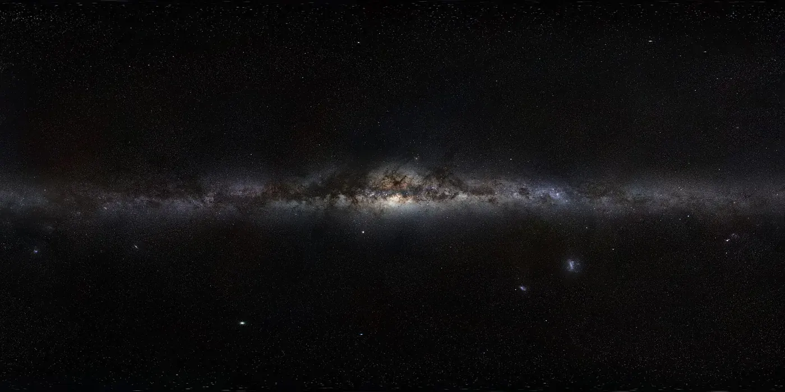
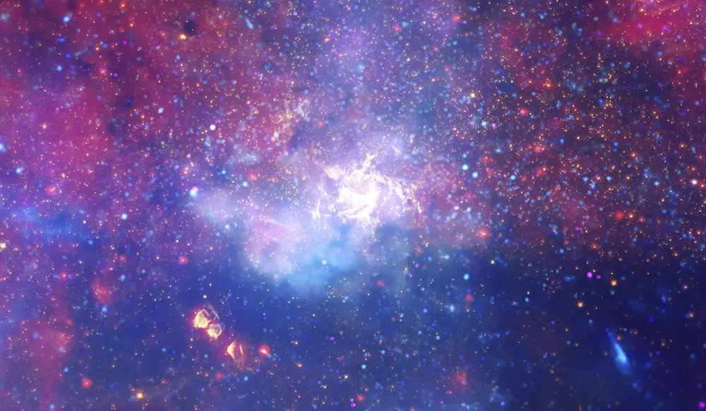

← GalaxiesGalaxiesGalaxiasGaláxiasGalaxiesالمجرات
The Milky Wayहमारी आकाशगंगाLa Vía LácteaA Via LácteaLa Voie lactéeدرب التبانة
Our home galaxy, seen from the inside.हमारी अपनी galaxy, जिसे हम अंदर से देखते हैं।Nuestra galaxia, vista desde dentro.Nossa galáxia natal, vista por dentro.Notre galaxie, vue de l’intérieur.مجرتنا الأم، كما تُرى من الداخل.

📷 ESO/S. Brunier · CC BY 4.0

📷 NASA, ESA, CSA, STScI, CXC (via NASA's Webb Flickr) · CC BY 2.0
The shapeआकारLa formaA formaLa formeالشكل
The Milky Way is a barred spiral galaxy: a flat disk with a bar of stars across the middle and spiral arms winding out of its ends. The disk is only about 1,000 light-years thick, so it is far wider than it is tall. A faint halo of old stars and dark matter surrounds it.आकाशगंगा एक barred spiral galaxy है: एक चपटी disk जिसके बीच में तारों की bar है और उसके सिरों से spiral भुजाएँ निकलती हैं। Disk सिर्फ़ लगभग 1,000 प्रकाश-वर्ष मोटी है, यानी वह ऊँचाई से कहीं ज़्यादा चौड़ी है। पुराने तारों और dark matter का हल्का halo उसे घेरे है।
Where we areहम कहाँ हैंDónde estamosOnde estamosOù nous sommesأين نقف
The Sun is about two thirds of the way out from the centre, on a small branch between two big arms called the Orion Spur. We circle the centre at roughly 220 km per second. One lap takes about 230 million years, so the Sun has made around 20 laps since it was born.सूर्य केंद्र से लगभग दो-तिहाई दूरी पर है, दो बड़ी भुजाओं के बीच की एक छोटी शाखा पर, जिसे Orion Spur कहते हैं। हम केंद्र का चक्कर लगभग 220 km प्रति सेकंड की गति से लगाते हैं। एक चक्कर में लगभग 23 करोड़ साल लगते हैं, यानी सूर्य के जन्म से अब तक लगभग 20 चक्कर हुए हैं।
Why we see a bandहमें पट्टी क्यों दिखती हैPor qué vemos una bandaPor que vemos uma faixaPourquoi on voit une bandeلماذا نرى شريطًا
From inside the disk we look along it, so its stars pile up into a pale band across the night sky. That band is the Milky Way. The dark patches in it are dust clouds that block the light behind them.Disk के अंदर से हम उसी के साथ-साथ देखते हैं, इसलिए उसके तारे रात के आसमान में हल्की पट्टी बना देते हैं। वही पट्टी Milky Way है। उसमें दिखते गहरे धब्बे धूल के बादल हैं जो पीछे की रोशनी रोक लेते हैं।
The middleबीच का हिस्साEl centroO meioLe milieuالوسط
At the centre sits Sagittarius A*, a black hole of 4.3 million Suns. Dust hides the centre in visible light, so astronomers use infrared and radio telescopes to look through it.केंद्र में Sagittarius A* है, 43 लाख सूरज वाला ब्लैक होल। दिखने वाली रोशनी में धूल केंद्र को छिपा देती है, इसलिए खगोलविद infrared और radio telescopes से उसके आर-पार देखते हैं।